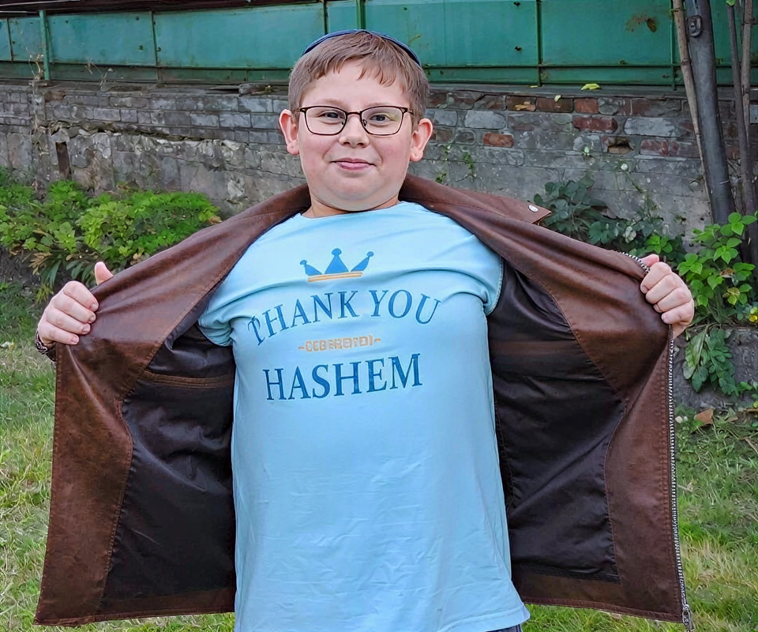
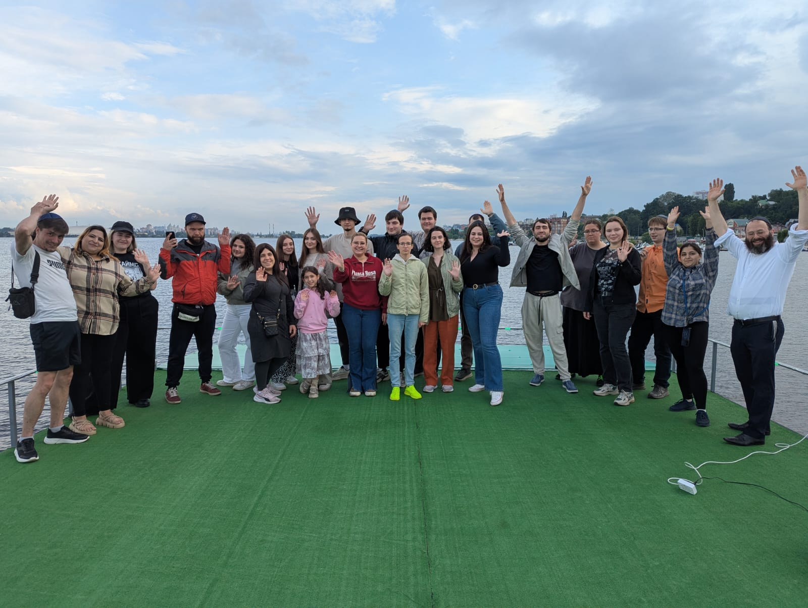
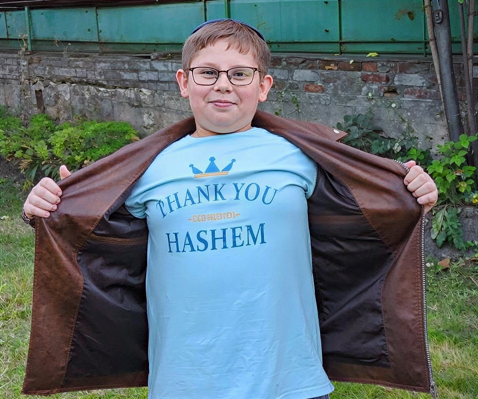
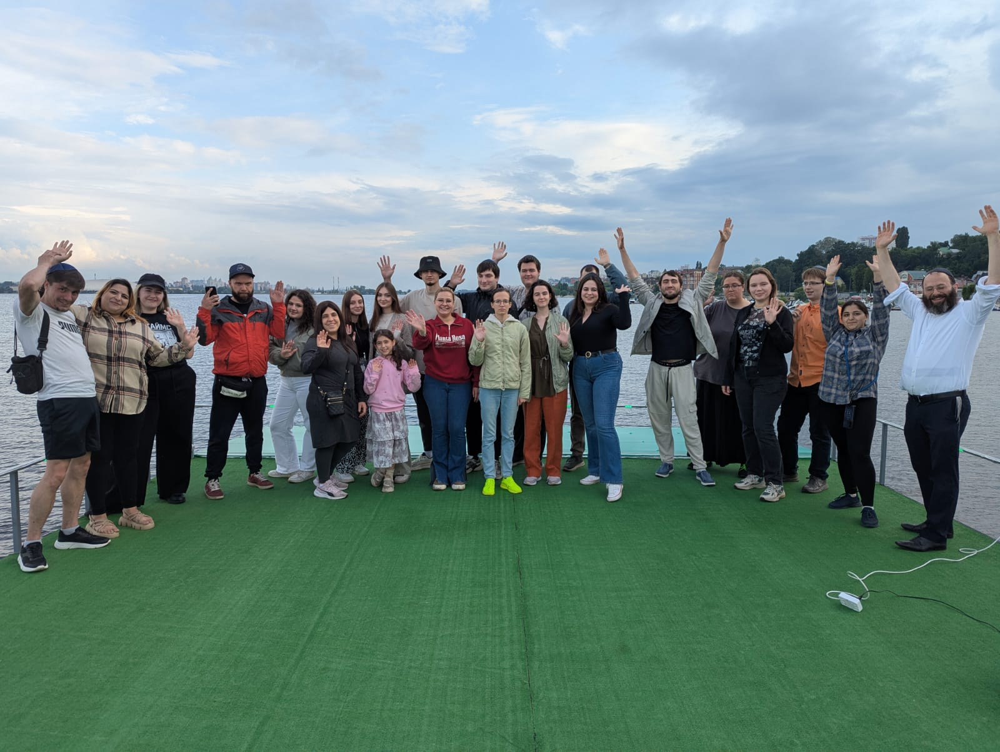
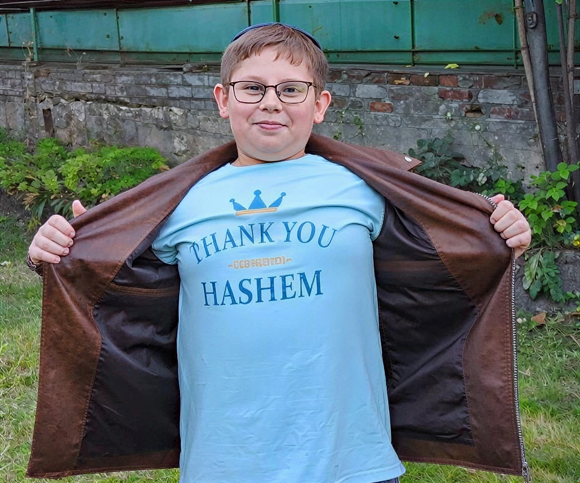
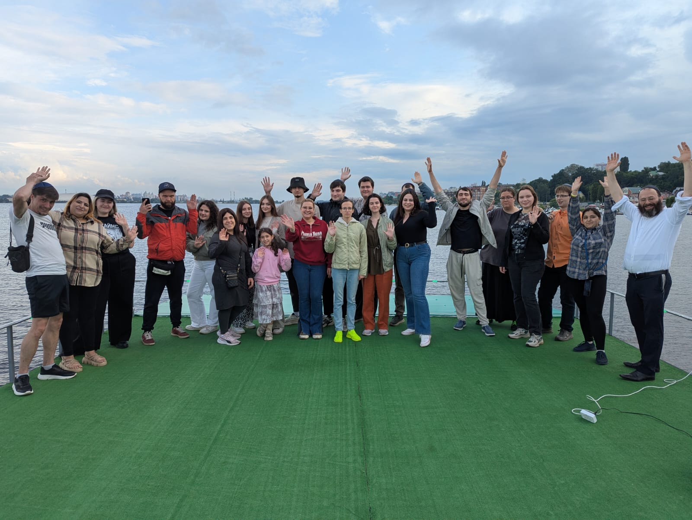

Gallery
 



Seed Bloom Charity is a nonprofit 501(c)(3) dedicated to supporting Jewish life in places where Jewish identity was oppressed, and where an entire generation never had the chance to know what it truly means to be Jewish. We help nurture hidden Jewish roots — buried under decades of silence and erasure — like seeds finally receiving the water they have always needed.
We provide warmth, guidance, and nourishment so individuals and communities can grow, thrive, and proudly blossom. Through education, cultural programs, and direct support for families and individuals in need, we strive to create a lasting and meaningful impact.
We believe that every act of kindness can grow into something bigger. Our mission is to nurture and strengthen Jewish life by providing resources, opportunities, and a sense of belonging for everyone.
Support Our Work

